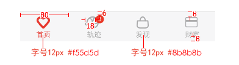
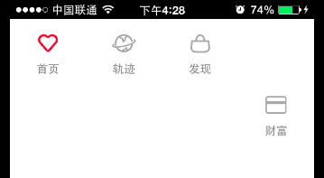

客户端自动换行
根据客户端布局算法，一些inline控件从左往右排列宽度和超过屏幕宽度时则自动换行。
现在5.2版本上ios平台和android平台在处理一排控件长度和刚好跟屏幕宽度一样时存在布局差异，我们先看一下下面例子。
1 报文
需要实现效果如下图所示：

实现思路：
父控件div包含四个inline div控件，此四个div分别设置不同的left值{0,80,160,240},同时每个div的宽度为80px， 在每个内联div中包含button和label用来展现图片和文字信息。
实现报文：
<?xml version="1.0" encoding="UTF-8" ?>
<content>
<head>
<style>
/*footer 样式*/
.div_footer_default{left:0px;width:320px;}
.div_footer_custom{position: fixed;bottom:0px;}
.div_div_footer_default{width:80px;height:60px;inline-block:inline;}
.div_div_footer_custom1{left:0px;}
.div_div_footer_custom2{left:80px;}
.div_div_footer_custom3{left:160px;}
.div_div_footer_custom4{left:240px;}
.btn_footer_default{width:30px;height:30px;left:25px;top:10px;}
.btn_footer_custom1{background-image:url(home.png);}
.btn_footer_custom2{background-image:url(trajectory.png);}
.btn_footer_custom3{background-image:url(found.png);}
.btn_footer_custom4{background-image:url(wealth.png);}
.lbl_footer_custom{width:80px;text-align:center;}
.lbl_footer_default{font-size: 12px; color:#8B8B8B;}
</style>
</head>
<body>
<!--footer-->
<div class="div_footer_default,div_footer_custom" border="0">
#{local footer_tab = {{"home","首页"},{"trajectory","轨迹"},{"found","发现"},{"wealth","财富"}}}#
#{for i = 1,4 do }#
#{local div_class="div_div_footer_default,div_div_footer_custom"..i}#
#{local button_class = "btn_footer_default,btn_footer_custom"..i}#
<div class="#{= div_class}#" border="0">
<input type="button" class="#{= button_class}#" onclick="menu_click('#{= footer_tab[i][1]}#')"/><br/>
<label class="lbl_footer_default,lbl_footer_custom">#{= footer_tab[i][2]}#</label>
</div>
#{end}#
</div>
</body>
</content>
2 ios平台展现

3 android平台展现

4 差异性
根据样式中写到.div_div_footer_default{width:80px;height:60px;inline-block:inline;},那么底部每个div标签为内联元素。同时在样式中有写
.div_div_footer_custom1{left:0px;}
.div_div_footer_custom2{left:80px;}
.div_div_footer_custom3{left:160px;}
.div_div_footer_custom4{left:240px;}
规定了每个div的left，根据计算这四个div的宽度和刚好为320px，等于屏幕宽度，不应该换行。
为什么IOS平台会换行，是因为IOS平台先计算的div的宽度加上两个div中间间隔得到的宽度和大于屏幕宽度所以先进行换行然后设置left值。
5 如何避免
在碰到这样的兼容性问题时需要客户端修改布局算法，带来的问题就是涉及到这个换行布局的界面都得重新测试，这个工作量非常大，所以考虑一种折中办法，由模版修改为两个平台表现一致从而规避此兼容性问题。
对于此问题的修改为对最后一个div设置一个top值，让它在换行后根据top值重新布局，此时设置top值为0即可，所以修改为：
.div_div_footer_custom4{left:240px;top:0px;}
在ios平台展现为：
在ad平台展现为：
两个平台展现一致。